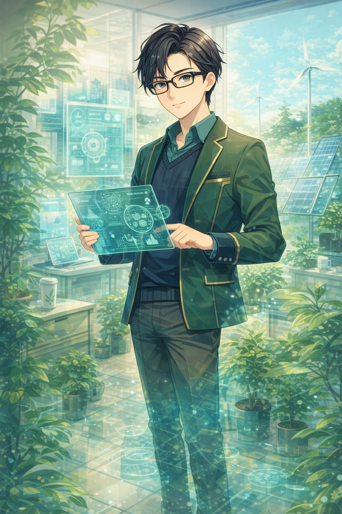

E 社群倡議 vs. I 個人實踐
你更習慣在群體中號召、連結與推廣，還是從自己的生活細節開始落實低碳選擇，並用穩定實踐來影響他人？
E 社群倡議
I 個人實踐

用 12 題快速找到你的 Climate Type。
依直覺作答即可。
四個維度，快速看懂你的行動傾向。
你更習慣在群體中號召、連結與推廣，還是從自己的生活細節開始落實低碳選擇，並用穩定實踐來影響他人？
你更重視看得見、立刻可做的環保任務，還是更傾向思考底層結構、未來系統與跨領域創新解方？
你做環保決策時，是更依賴科學數據、效率與結構，還是更容易被生態關懷、人的故事與代際責任所推動？
你的永續行動是偏向目標導向、紀律執行，還是更喜歡在現場隨機應變，以彈性與創意維持環保習慣？
這是你最自然的氣候行動風格。

-
-
-
-
-